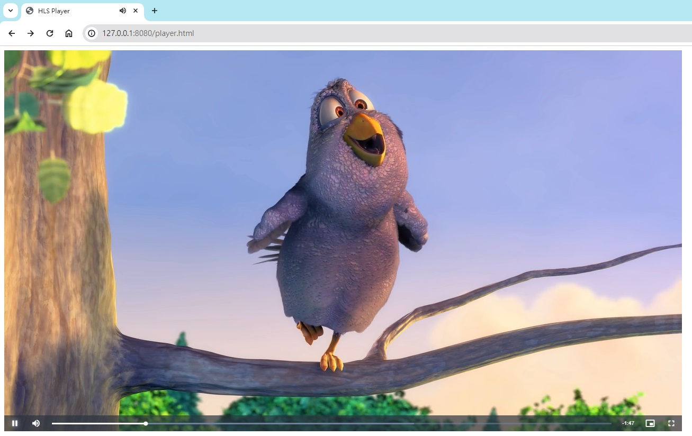

最近在測試 HLS 轉檔
轉出來後有一堆 ts 片段
又懶得上傳到 Staging 環境
於是就想找在本機端可以播放影片的方法
首先先認識一下 HLS 是什麼
什麼是 HLS
HLS 是一種串流媒體協定
它把一個影片切成許多小片段
使用者只需要下載所需片段就能觀看
不需要等前面都載完
然後播放器會偵測頻寬來選擇不同的畫質
檔案結構大概長這樣
1
2
3
4
5
6
7
8
9
10
11
12
13
14
15
16
17
| hls
├─480p
│ ├─01.ts
│ ├─02.ts
│ ├─03.ts
│ └─playlist.m3u8
├─720p
│ ├─01.ts
│ ├─02.ts
│ ├─03.ts
│ └─playlist.m3u8
├─1080p
│ ├─01.ts
│ ├─02.ts
│ ├─03.ts
│ └─playlist.m3u8
└─index.m3u8
|
第一層有一個 index.m3u8，記錄三種畫質的播放路徑
第二層每個畫質資料夾都有一個 playlist.m3u8，記錄該畫質的播放路徑
然後還有一些 .ts 小片段影片檔
如何播放 HLS
我們將透過 Video.js 播放器來實作
前置準備
- 新增一個資料夾叫做 test
- 在 test 底下新增一個資料夾叫做 video
- 在 video 底下放入 hls 檔案
- 在根目錄新增一個 player.html 檔
檔案結構如下
1
2
3
4
5
6
7
8
9
10
11
12
13
14
15
16
| test
├─video
│ ├─480p
│ │ ├─01.ts
│ │ ├─...ts
│ │ └─playlist.m3u8
│ ├─720p
│ │ ├─01.ts
│ │ ├─...ts
│ │ └─playlist.m3u8
│ ├─1080p
│ │ ├─01.ts
│ │ ├─...ts
│ │ └─playlist.m3u8
│ └─index.m3u8
└─player.html
|
產生 player.html 檔
html 檔內容如下
1
2
3
4
5
6
7
8
9
10
11
12
13
14
15
16
17
18
| <!DOCTYPE html>
<html lang="en-us">
<head>
<meta charset="UTF-8">
<link rel="shortcut icon" href="#">
<title>HLS Player</title>
<link href="https://vjs.zencdn.net/8.10.0/video-js.css" rel="stylesheet">
</head>
<body>
<video id="my-video" class="video-js" controls preload="auto" width="1280" height="720" data-setup="{}">
<source src="./video/index.m3u8" type="application/x-mpegURL">
</video>
<script src="https://vjs.zencdn.net/8.10.0/video.min.js"></script>
</body>
</html>
|
啟動 http-server 服務
- 安裝 http-server 教學
- 啟動服務
http-server . 8080
- 瀏覽器前往
http://127.0.0.1:8080/player.html
- 播放影片

目前播放器是自動偵測頻寬來給不同畫質
不能在播放器上選擇畫質
這個有空再研究
參考資料